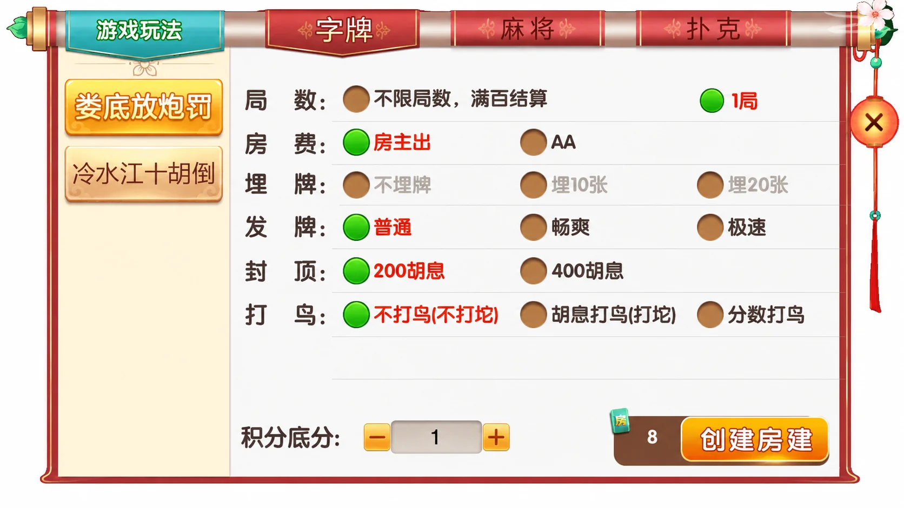
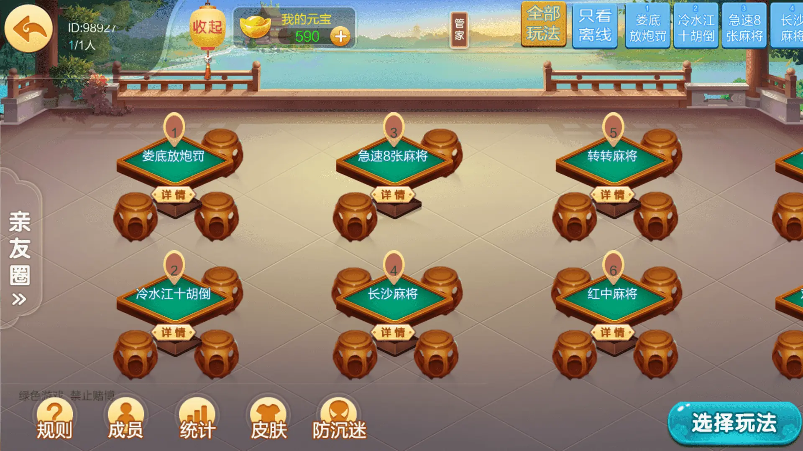

七星系列 · 地区界面与技术笔记
七星娄底：固定局数与条件结束的界面表达
围绕娄底放炮罚、冷水江十胡倒，分析房间摘要与结束方式的表达。
娄底版本包含什么
公开清单列出9个名称：字牌为娄底放炮罚、冷水江十胡倒；麻将为急速8张麻将、长沙麻将、转转麻将、红中麻将；扑克为11张跑得快、欢乐斗地主、跑得快。地区特色集中在两项字牌入口。
版本介绍同时提到房卡、亲友圈乐豆和比赛模式，因此不能将整个版本归为单一房卡模式。下面只分析已展示的规则表单与桌台布局；未验证乐豆取得方式、兑换、结算或比赛流程。
局数并非总是一个整数
娄底放炮罚面板的局数行同时出现“不限局数，满百结算”和“1局”。这是本篇关注的差异：界面把固定局数与条件结束并列展示，不能只用一个数字字段表达两者。画面还显示房主出/AA、发牌、封顶和打鸟选项，这些标签不等于完整的玩法计算定义。




规则图为第三方界面的AI整理局部；桌台图仅编码压缩，群组标识与桌号保持原样。未添加不存在的用户头像或ID。元宝、积分及房费按界面原样展示，未确认与现金的关系。
把结束方式与显示文字分开
类似房间界面可以用明确的模式字段表达结束方式。固定局数保存正整数；条件模式保存提示文本或业务规则标识。读取旧草稿时应校验模式，而不是将“无限局数”写成0，再让不同页面自行猜测含义。
以下独立示例只生成会话说明文字，不计算胡息、结算、费用或输赢，也不是七星原工程代码。条件模式中的文本由调用方提供，展示时应使用文本节点而不是直接拼入HTML。
export function sessionLabel(config) {
if (config?.mode === 'fixed' && Number.isInteger(config.rounds)
&& config.rounds > 0) return `${config.rounds}局`;
if (config?.mode === 'condition' && typeof config.label === 'string'
&& config.label.trim()) return config.label.trim();
throw new TypeError('Invalid session configuration');
}
独立示例文件已通过10项断言，覆盖固定与条件模式、空输入、非整数和未知模式。真正的结束判定仍应由经过确认的规则与服务端状态决定。
桌台页将娄底放炮罚、冷水江十胡倒与麻将放在同一列表。用户进入详情前，宜显示玩法名称和结束方式的摘要，减少把不同房间当成相同局数的误解。这里是交互建议，不代表截图已经实现该摘要。
核验范围
本篇依据公开文字和画面做界面分析，未获取、编译或运行第三方工程。未确认客户端引擎、双端构建结果、数据库或内部协议；也不根据“亲测可搭建”等宣传推断工程稳定性。